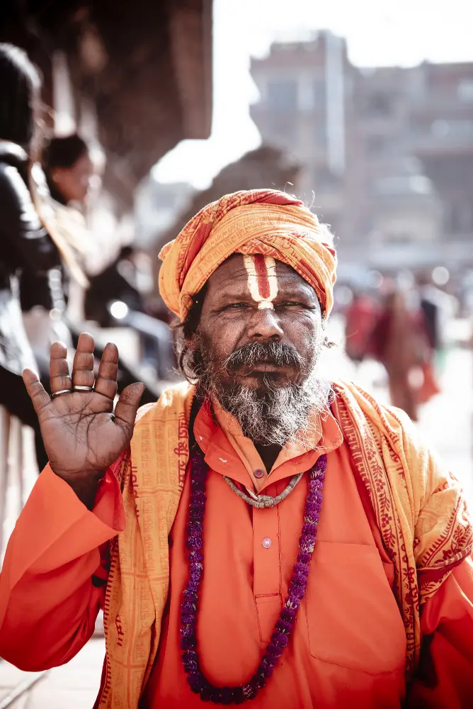

Vedic astrology, Kundali matching, Grah shanti, Vastu
Tantra mantra, Kaal Sarp dosh, Rudrabhishek
Yajna, Hawan, Griha Pravesh, Wedding ceremonies
Vastu dosh remedies, Home-office Vastu, Building Vastu
Wedding muhurat, Griha Pravesh, Vehicle puja, Nakshatra
Palm reading, Numerology, Name suggestion, Gemstone advice
Rudraksha selection, Mala pujan, Mantra sadhana, Gemstones
Durga Saptashti, Sundarkand, Ram Katha, Bhagwat Katha